HELIX laser safety plan¶
Location: AIMD-L Laser Shock Testing Area, Stieff G30 Source document: AIMD-L Laser Shock Safety SOP, last updated 02/05/2025
Introduction and overview¶
This Laser Safety Plan establishes protocols and procedures to ensure the safe use of lasers and laser systems within the AIMD-L Laser Shock Testing Area. It is designed to comply with ANSI Z136.1 (American National Standard for Safe Use of Lasers) and other relevant safety standards.
Open item
Add an overview of the facility.
Important contacts¶
| Contact | Location | Phone number |
|---|---|---|
| Todd Hufnagel, PI | Maryland 111 | 410-339-7779 |
| Matt Shaeffer, Sr. Engineer | Malone G39 | 443-756-4387 |
| Joseph Nkansah-Mahaney, Staff Engineer | Stieff G30B | 714-609-7954 |
| Security (all emergencies) | 3001 Remington | 410-516-7777 |
| Health, Safety and Environment (HSE) | Wyman G04 | 410-516-8798 |
| Student Health | 1 E. 31st St. N200 | 410-516-8270 |
| Occupational Health | Eastern C160 | 443-997-1700 |
| Dan Kuespert (safety advocate and consultant) | Wyman 650 | 410-516-5525 |
| Victoria Lai (Laser Safety) | Wyman 650 | 410-516-0870 |
| Transwestern – Alex Lotts (Building manager) | 3910 Keswick N2500 | 443-997-0680 |
Scope¶
This plan applies to all personnel, contractors, and visitors who use or may be exposed to lasers classified as Class 3B and Class 4 within the facility. Lower-class lasers (Class 1, 2, and 3R) are addressed for awareness and compliance.
Responsibilities¶
- Laser Safety Officer (LSO):
- Enforce compliance with the Laser Safety Plan.
- Approve all laser installations and modifications.
- Conduct hazard evaluations and periodic audits.
- Maintain training records and accident reports.
- Laser operators:
- Follow standard operating procedures (SOPs) for laser use.
- Use personal protective equipment (PPE) as required.
- Report incidents or unsafe conditions to the LSO.
- Management:
- Support laser safety initiatives.
- Ensure adequate resources for safety implementation.
Table I: Laser Safety Officer, laser operators, and management with contact information.
| Responsibility | Name | Role | Contact info |
|---|---|---|---|
| Laser Safety Officer | Victoria Lai | Occupational Health and Safety Officer | vlai1@jhu.edu, (410) 516-0870 |
| Laser operators | Arjun Sreedhar | Postdoc | asreedh2@jhu.edu |
| Piyush Wanchoo | Postdoc | pwanchoo@jhu.edu | |
| Jake Diamond | PhD Student | jdiamo15@jhu.edu | |
| Konrad Muly | PhD Student | kmuly1@jh.edu | |
| Lucas Rackers | PhD Student | lracker1@jh.edu | |
| Management | KT Ramesh | PI | ramesh@jhu.edu |
| Todd Hufnagel | PI | hufnagel@jhu.edu | |
| Matt Shaeffer | Staff Engineer | mshaeff1@jhu.edu | |
| Joseph Nkansah-Mahaney | Staff Engineer | tnkansa1@jhu.edu |
Laser classification¶
- Class 1: Safe under normal use.
- Class 1M: Safe unless viewed with magnifying optics.
- Class 2: Low power; safe for accidental viewing.
- Class 2M: Safe for accidental viewing unless with optics.
- Class 3R: Potentially hazardous but limited risk.
- Class 3B: Hazardous for direct exposure.
- Class 4: High risk for direct and scattered radiation.
Hazard evaluation¶
Table II: Lasers of class greater than 2 present in the AIMD-L Laser Shock Testing Area.
| Laser | Type | Wavelength (nm) | Max power | Class | Pulse energy |
|---|---|---|---|---|---|
| Drive laser | Pulsed | 1064 | 633 MW peak (calculated) | 4 | 7.6 J @ 5 Hz rep rate |
| PDV | CW | 1550 | 45 mW (16.5 dBm) | 3B | N/A |
| Heating | CW | 980 | 300 W | 4 | N/A |
Hazards¶
Beam hazards¶
Eye hazard
Radiation is focused on the retina with an increase in intensity of up to 100,000×, causing burns and/or permanent blindness. A person cannot turn away or blink fast enough to prevent retinal eye injury.
- Eyes: The Class 4 lasers (drive and heating) carry the greatest risk of injury to the eyes. For those two, direct and scattered radiation pose the possibility of blindness. The PDV laser, as a Class 3B laser, still carries a risk of blindness upon direct radiation, and prolonged exposure to scattered radiation is considered a hazard. Laser safety glasses must always be worn when any of these lasers is operating.
- Skin: Infrared lasers (as used in this lab) use wavelengths closer to the resonant
frequencies of water, which comprises much of the body. As such, the lasers in this
lab pose a greater burn threat than their UV counterparts.
- The drive laser is a pulsed laser with a peak power of 633 MW. A single pulse can cause severe burns, skin disruption, and pigment changes.
- The heating laser has a continuous power of 300 W. It can cause severe burns before one can react.
- The PDV laser carries less risk; however, if the laser dot is kept motionless on the skin for several seconds, heat will build up. Always minimize exposure of the PDV laser on the skin.
Non-beam hazards¶
- Sound hazards: Prolonged exposure to high-intensity sound from laser shots may cause hearing damage.
- Heated material contact and fumes: Contact with materials heated by the heating laser can cause severe burns. Proper insulation and handling protocols are essential to avoid injury. The heating laser can heat material to ultra-high temperatures, so certain materials can produce noxious fumes such as carbon monoxide, silica gas, dissociated metal oxides, and metal vapors. Proper ventilation and/or containment environments are essential if a material is planned to be heated to high temperatures.
- Conveyor belt: Beware of pinch hazards associated with the sample conveyor belt movement and motor motion. Stay clear of conveyors when in operation unless in close coordination with the person operating the conveyor.
- Robot movement: Robot arms move to transfer samples and assemble testing packages. Stay clear when a robot arm is in use unless working in close coordination to program the robot and with a person operating the robots.
- Trip hazards: Always keep the area as clean and orderly as possible. Cables, wires, lab equipment, etc. all present tripping hazards which may cause harm to yourself and the equipment.
- Electrical hazards: This lab area uses high-voltage equipment. Take the utmost care when handling power supplies. Most laser accidents that result in loss of life or limb stem from electrical hazards.
Exposure risks¶
Beam alignment¶
- Aligning the pulsed laser is crucial, as it is the most dangerous part of the lab, and ANY diffraction can result in injury or damage to the surrounding area.
- High caution and awareness are needed during alignment, as you will be closest to the laser.
- Always be mindful of the beam path, even if the shutter is closed.
Lab entry/exit exposure¶
- Exposure to people in the AIMD-L lab area when entering and exiting the room.
Open item
Expand this section.
Nominal hazard zones and control measures¶
Open item
Determine the maximum permissible exposure (MPE) for each laser.
- There is always a chance of encountering scattered or reflected laser beams. Ensure that appropriate laser safety goggles and lab coats are always worn when lasers are on.
- Scattered radiation from the drive laser is most likely to be found at the level of the
optical bench. Avoid placing your head at the level of the bench.
- The periscope diverts the beam into the vertical direction. Avoid placing your head vertically close to the periscope.
Control measures¶
Engineering controls¶
- The AIMD-L laser shock system is currently an open-optics setup within the laser enclosure area. While physical barriers are in place, the laser beams and optical components remain exposed, without protective housing, to facilitate system modifications.
- Warning lights on the exterior of the Laser Shock Testing Area indicate when any of the lasers are in use.
- Interlocks: A defeatable interlock system requires the enclosure doors to be closed
to actively use the drive or heating laser, as follows:
- Drive laser: When the door to the laser enclosure is opened, the interlock system is triggered. The interlock causes a physical shutter inside the laser case to close, blocking the laser beam.
- Heating laser: When the door to the laser enclosure is opened, the interlock system is triggered and the heating laser is powered off.
- PDV: The PDV laser is not attached to the interlock.
Administrative controls¶
- Warning signs and labels are present at all entries of the laser locations.
- Standard operating procedures (SOPs) are in place to manage risks related to beam and non-beam hazards.
- Card access is required for entry to the AIMD-L facility. Any visitors must be approved and supervised such that all safety policies are upheld.
- The lasers in the AIMD-L laser testing enclosure must be operated with a buddy system in place. You may not operate the laser alone.
- Interlocks:
- When the laser is running, a passcode is needed to bypass the interlock. Anyone in the greater AIMD-L facility without the appropriate training may NOT know the passcode to bypass the interlock.
- While the laser is running, it may be necessary to bypass the interlock to enter or exit the lab. When entering, knock to signal those working inside the lab to close the physical shutter while you enter. The physical shutter must not be open unless the laser is actively being used.
Personal protective equipment¶
- Laser safety goggles rated for the wavelengths listed must be worn while any laser is
on. They may be replaced with regular safety goggles when no lasers are running.
- Always ensure the laser safety goggles are rated (OD 5+) for the specific wavelength of the lasers in use.
- Inspect goggles for damage or degradation before each use.
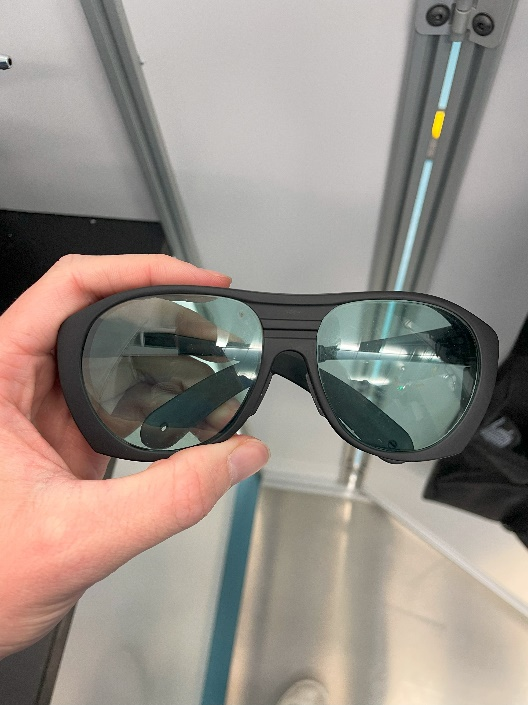
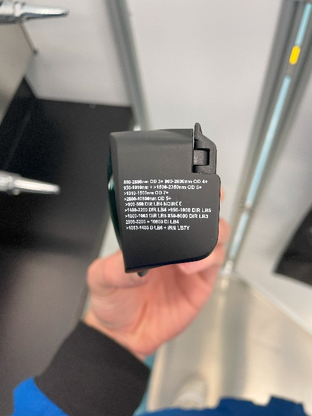
Figure 1: (Left) A pair of laser safety goggles permitted in the Laser Shock Testing Area. (Right) Ensure that your goggles have sufficient coverage over the wavelengths in use (OD 5+), as printed on the side of the goggles.
- Lab coats, pants, and closed-toe shoes must always be worn inside the lab.
- Wear nitrile gloves, especially during laser alignment.
- Wear heat-resistant gloves when handling materials exposed to the heating laser.
Summary of hazards and hazard mitigation methods¶
Table III: Identified hazards and hazard mitigation measures.
| Category | Hazard | Mitigation methods |
|---|---|---|
| Beam hazards | Burns to skin |
|
| Beam hazards | Eye exposure |
|
| Beam hazards | Drive laser exposure outside the Laser Shock Testing Area |
|
| Non-beam hazards | Sound hazards |
|
| Non-beam hazards | Heated material contact and fumes |
|
| Non-beam hazards | Conveyor belt |
|
| Non-beam hazards | Robot movement |
|
| Non-beam hazards | Trip hazards |
|
| Non-beam hazards | Electrical hazards |
|
Training¶
- All personnel must complete HEMI-mandated laser safety training before operating or working near lasers.
- Training topics include:
- Laser classification and associated hazards.
- Use of PPE.
- Emergency procedures.
- Users must be oriented to the AIMD-L space and receive specific instruction on the lasers in AIMD-L from senior members of the laser testing team.
Incident response¶
In the event of an accident or exposure
- Cease laser operations immediately and notify the AIMD-L staff.
- Notify the lab and WSE LSO and seek medical attention if needed.
- Document the incident and corrective actions.
Important contact information
| Contact | Number |
|---|---|
| Baltimore City Emergency | 911 |
| Campus Emergency | 6-7777 |
| Campus Security | 6-4600 |
| Occupational Health and Safety Office | 6-0450 |
| Health, Safety, and Environment | 608790 |
| Laser Safety Officer – Victoria Lai | (410) 516-0870 |
Inspections and audits¶
- Periodic inspections of laser equipment and facilities by the LSO.
- Annual audits to ensure compliance with the Laser Safety Plan.
Recordkeeping¶
Maintain records of:
- Laser inventory and classifications.
- Training completion.
- Incident reports and corrective actions.
- Annual audits and inspections.
References¶
- ANSI Z136.1 – Safe Use of Lasers.
- OSHA Standards for Laser Safety and Health.
Plan review and updates¶
Open item
This section is empty in the source document.
Optical layout¶
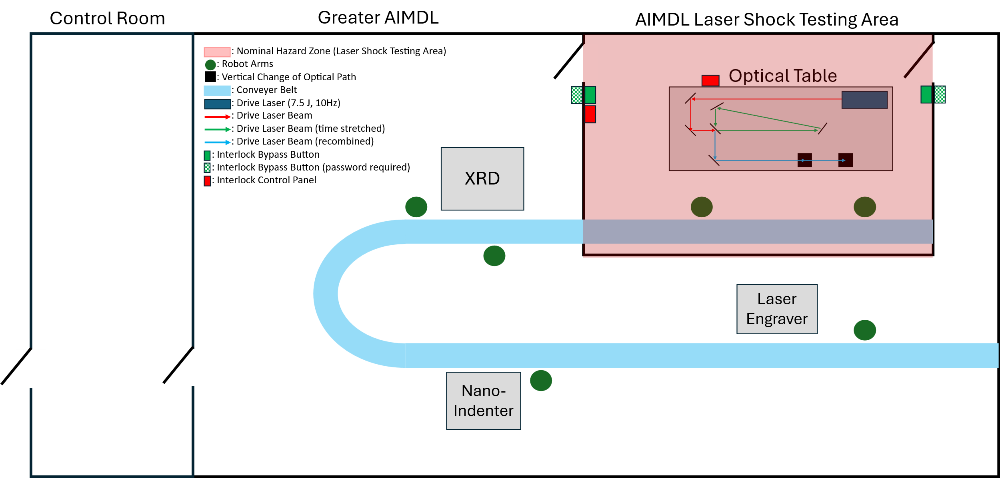
Figure 2: Diagram of the AIMD-L facility with the laser nominal hazard zone (in red).
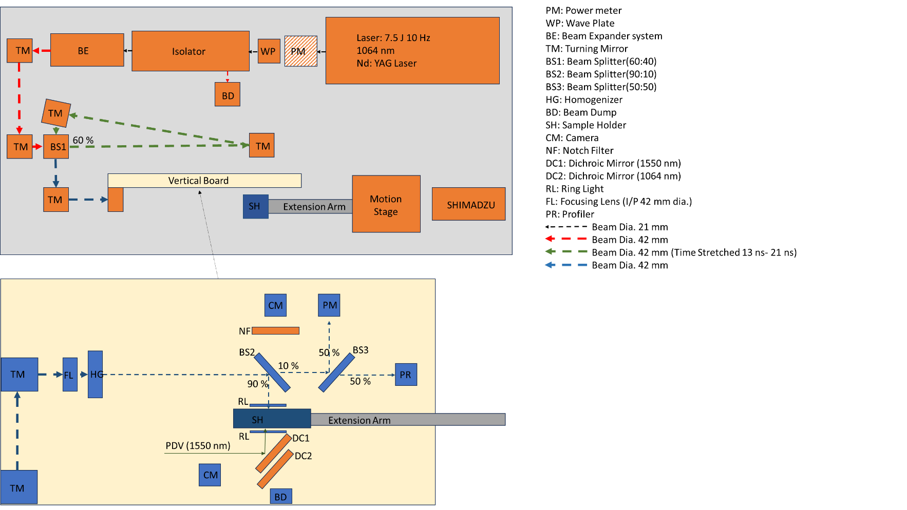
Figure 3: Detailed layout of the optical table in the Laser Shock Testing Area.
Supplementary information¶
Interlock control panels and bypass buttons¶
Locations of all interlock control panels along with the interlock bypass buttons:
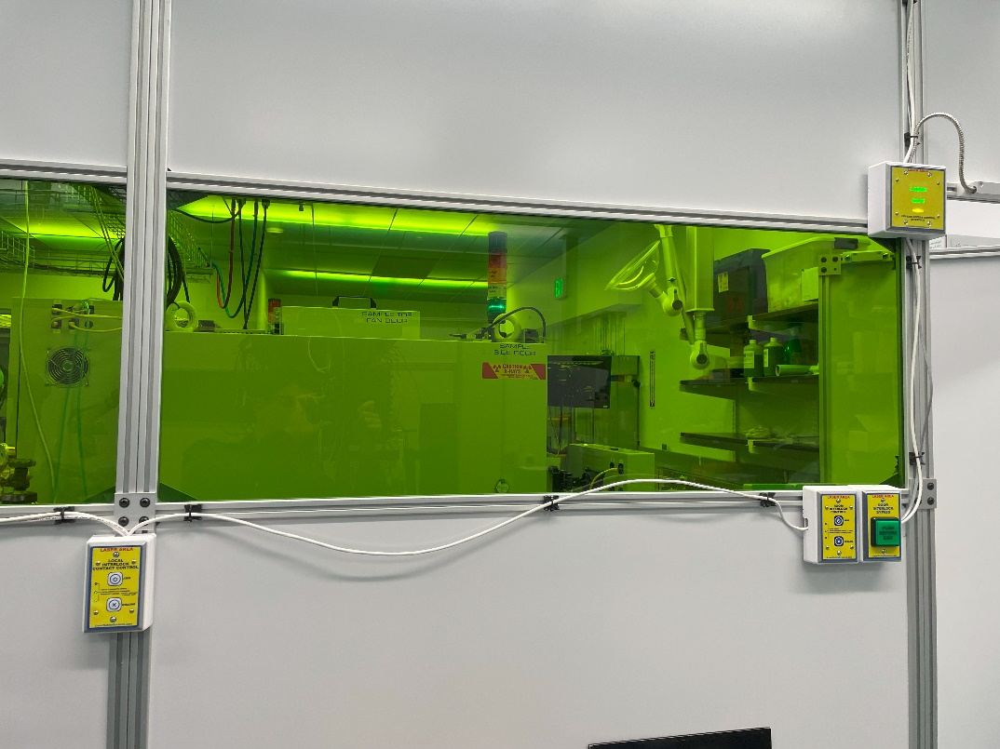
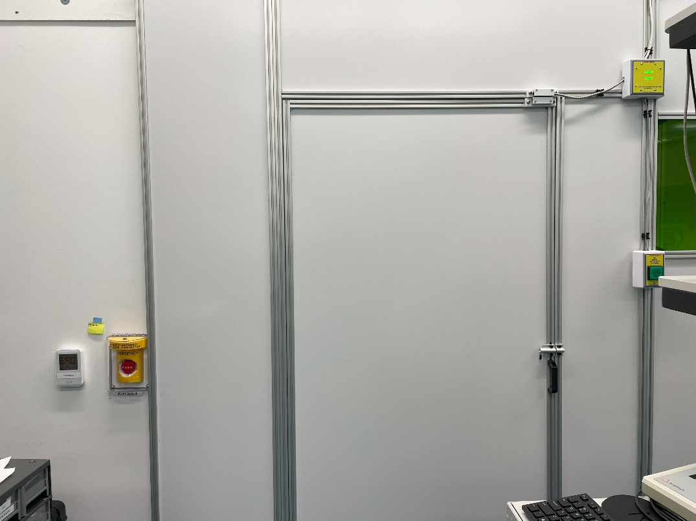
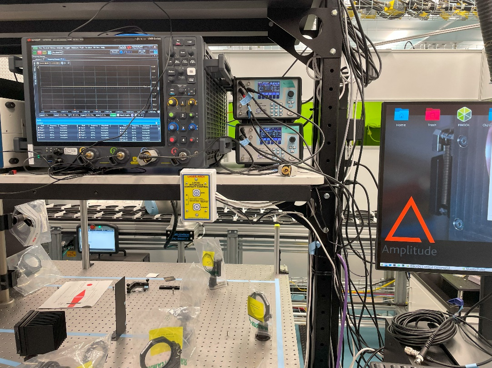
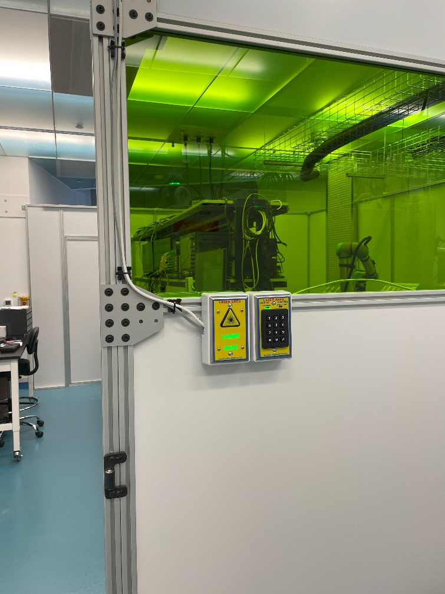
AIMD-L laser testing area¶
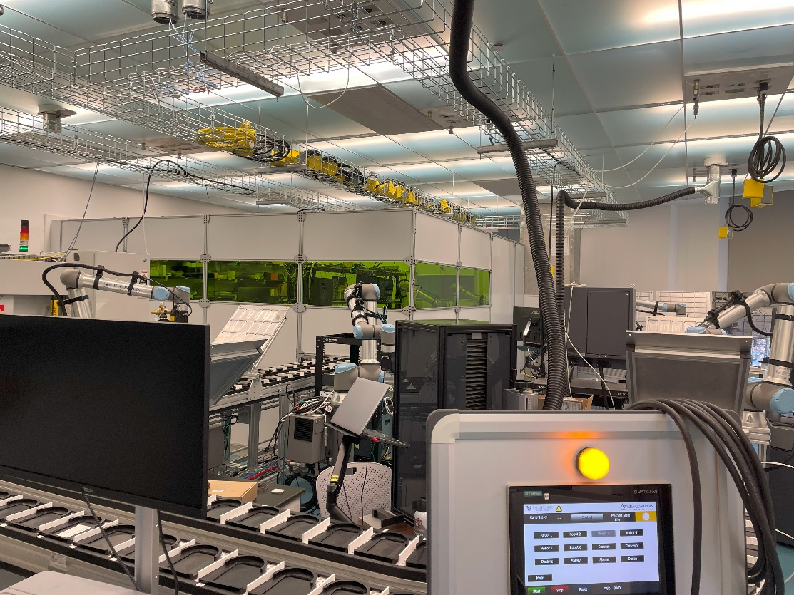
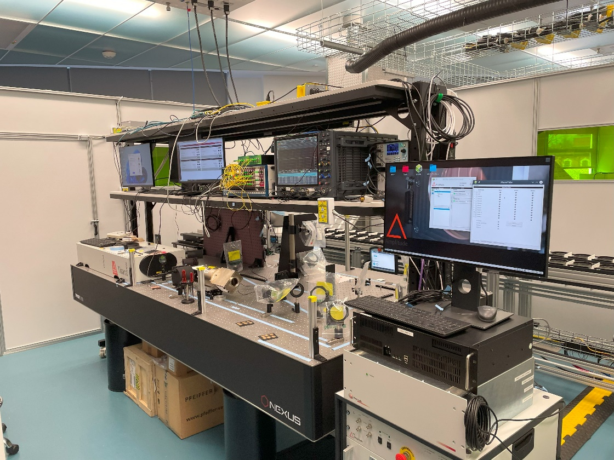
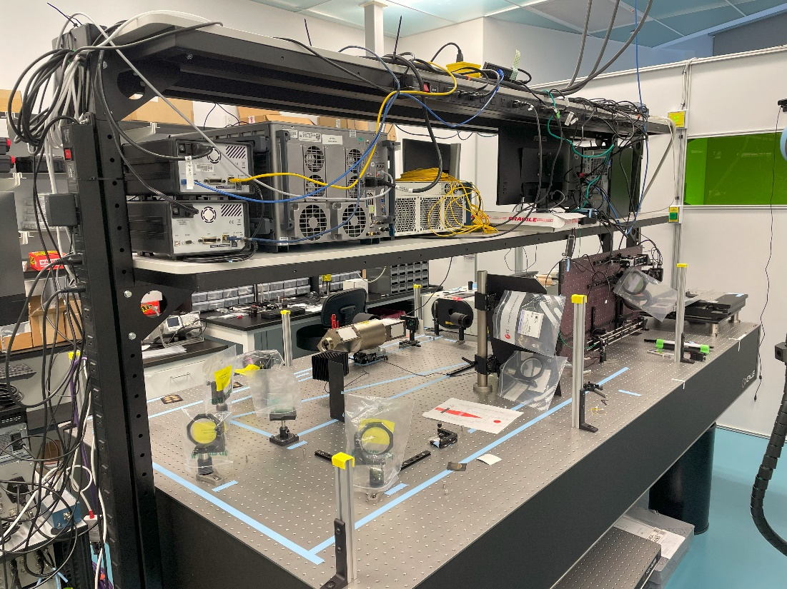
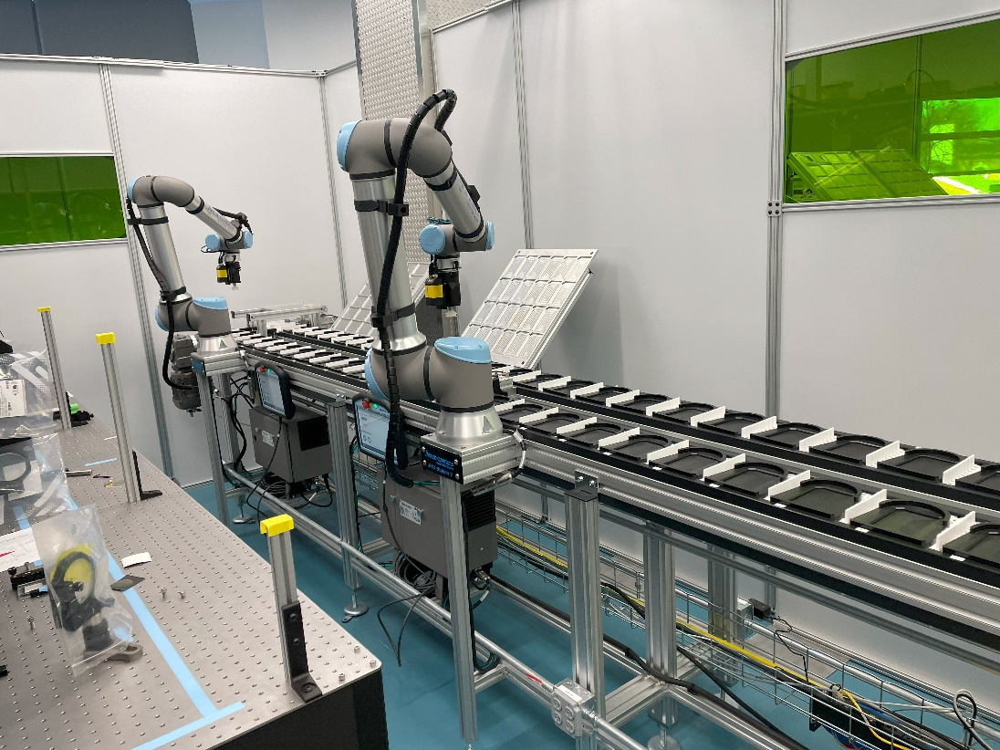
Lasers (Class 3 and above)¶
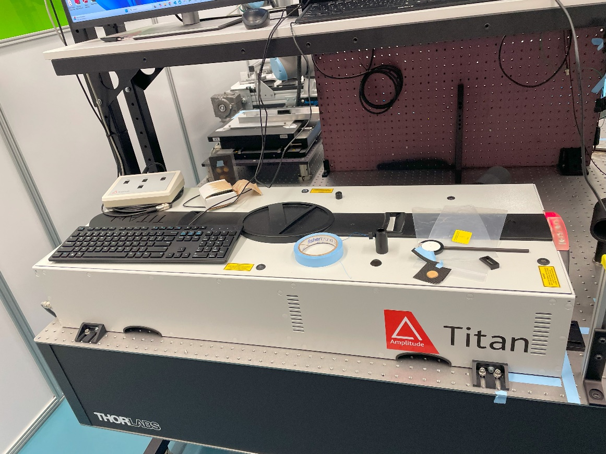
Drive laser.
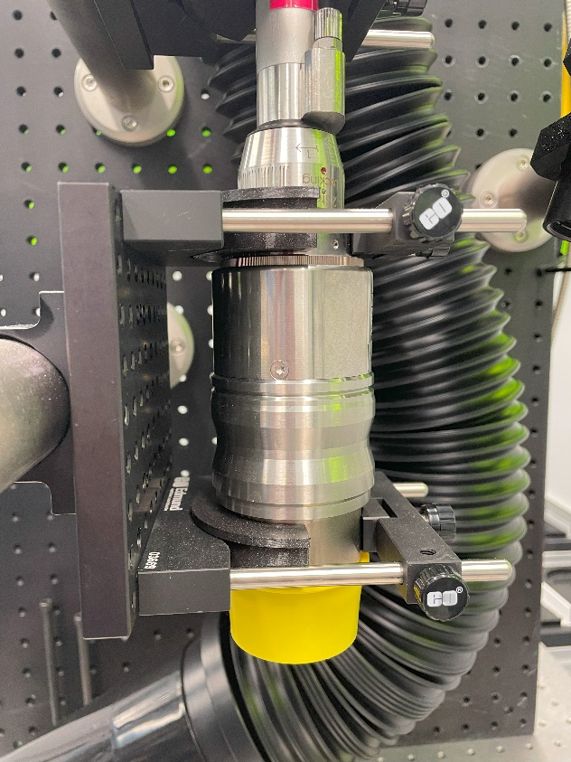
Heating laser.
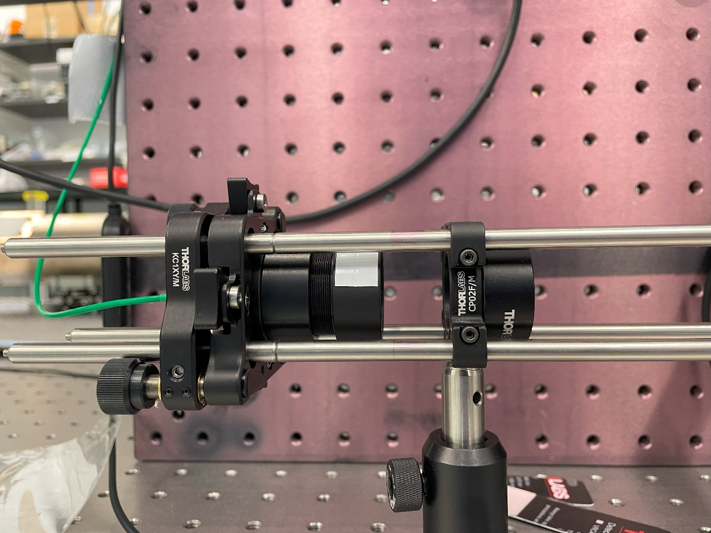
PDV laser.